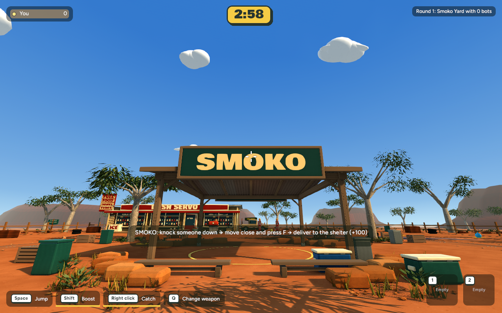
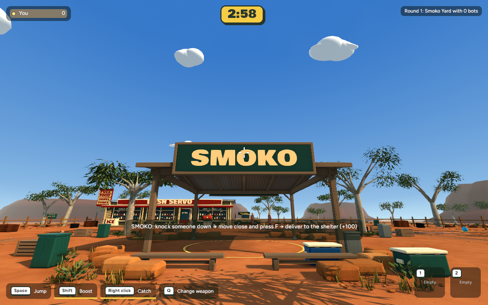

Matched native-game captures from the same camera and release build. The warm afternoon sun stays; the sky fill is cooler, and saturation/contrast are eased slightly so shade and cool-coloured props keep their separation.


Both captures use Smoko, zero bots, the same camera, 1280×800 resolution, and 300 warm-up plus 600 timing frames. Review scope and local testing steps are in CHECKPOINT.md.